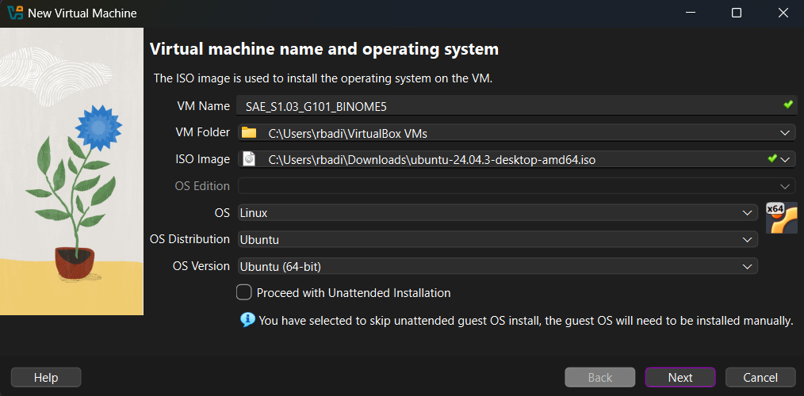
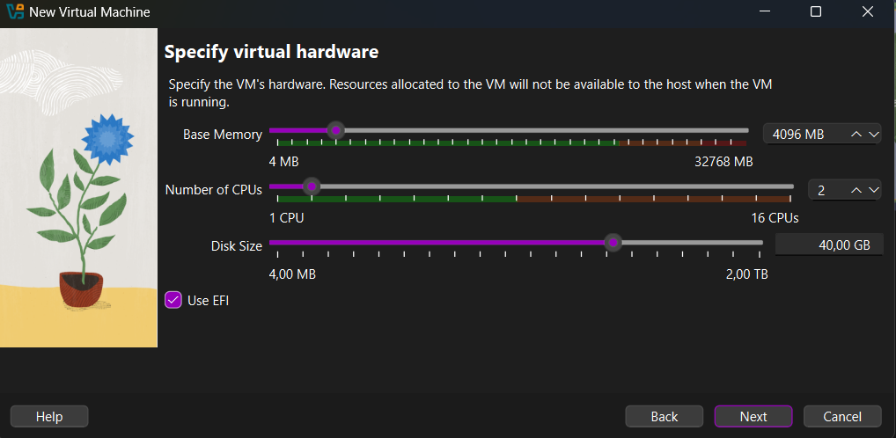
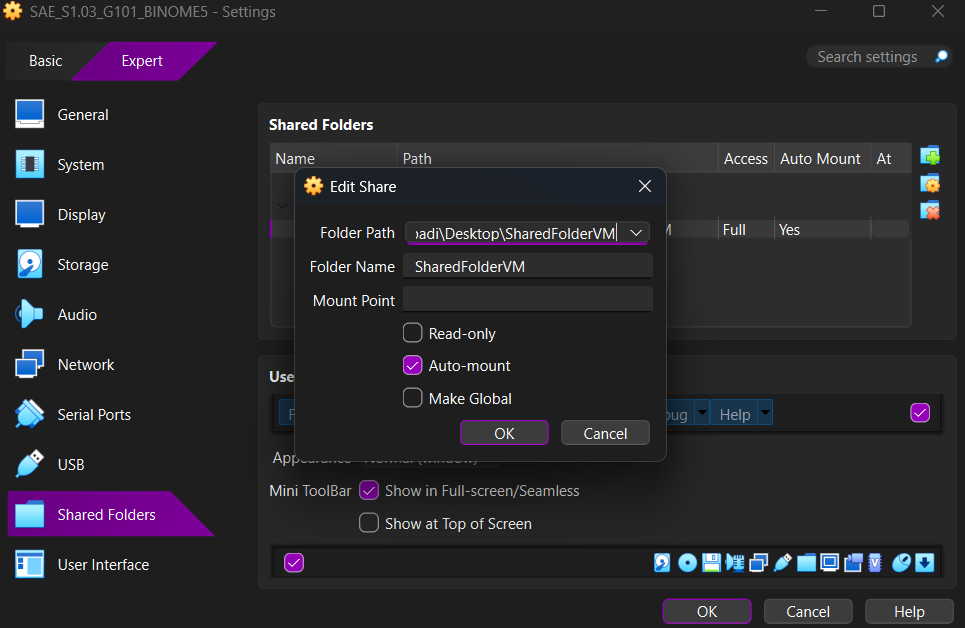
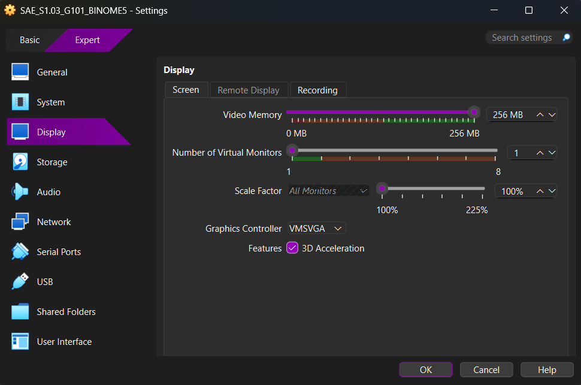

Partie II : Mise en place de la machine virtuelle
Choix de la distribution : Ubuntu 24.04.3 LTS
Pour ce projet nous avons décidé d’utiliser la distribution Ubuntu 24.04.3 LTS ("Noble Numbat"). Ce choix repose sur plusieurs critères :
- Stabilité et Support à Long Terme (LTS) : Garantit des mises à jour de sécurité jusqu'en 2029.
- Modernité des outils : Intègre des versions récentes de Python, PHP, GCC, indispensables pour le développement.
- Adéquation professionnelle : Très utilisé en entreprise et dans le Cloud.
- Compatibilité : Support optimal pour VirtualBox et WebStorm.
1. Choix de l'hyperviseur : Oracle VM VirtualBox
Nous avons sélectionné Oracle VM VirtualBox (Type 2 / Hébergé) pour son caractère open-source et sa facilité de gestion de l'encapsulation (.vbox, .vdi).
2. Configuration du matériel virtuel
Bien que la machine hôte dispose d'un Ryzen 7 et de 32 Go de RAM, nous avons configuré la VM pour être portable sur les machines de l'IUT (souvent 8 Go de RAM).

Allocation RAM
4096 Mo (4 Go) : Respecte le minimum pour Ubuntu tout en laissant des ressources à l'hôte.

Disque Dur
40 Go : Taille suffisante pour le système et les projets futurs.

Résumé de la configuration

| Composant | Allocation | Justification |
|---|---|---|
| Processeur | 2 cœurs | Garantit une exécution fluide sans impacter l'hôte. |
| Virtualisation | AMD-V / SVM | Activée pour éviter l'émulation logicielle lente. |
| Mémoire Vidéo | 128 MB | Maximum autorisé pour une interface fluide. |
| Accélération 3D | Activée | Décharge les calculs graphiques sur le GPU hôte. |
3. Configuration Avancée
Méthode d'installation : Manuelle
Nous avons décoché "Unattended Installation" pour maîtriser chaque étape (partitionnement, nommage strict des comptes, configuration clavier AZERTY).
Réseau : Accès par pont (Bridged Adapter)
Nous avons remplacé le mode NAT par le mode Pont. Cela permet à la VM d'avoir sa propre adresse IP sur le réseau physique, rendant le serveur web accessible depuis n'importe quelle machine du réseau local (et facilitant le déploiement SSH).
Dossier Partagé
Un dossier SharedFolderVM a été mis en place (Auto-mount) pour faciliter le transfert de fichiers entre Windows et Ubuntu sans clé USB.